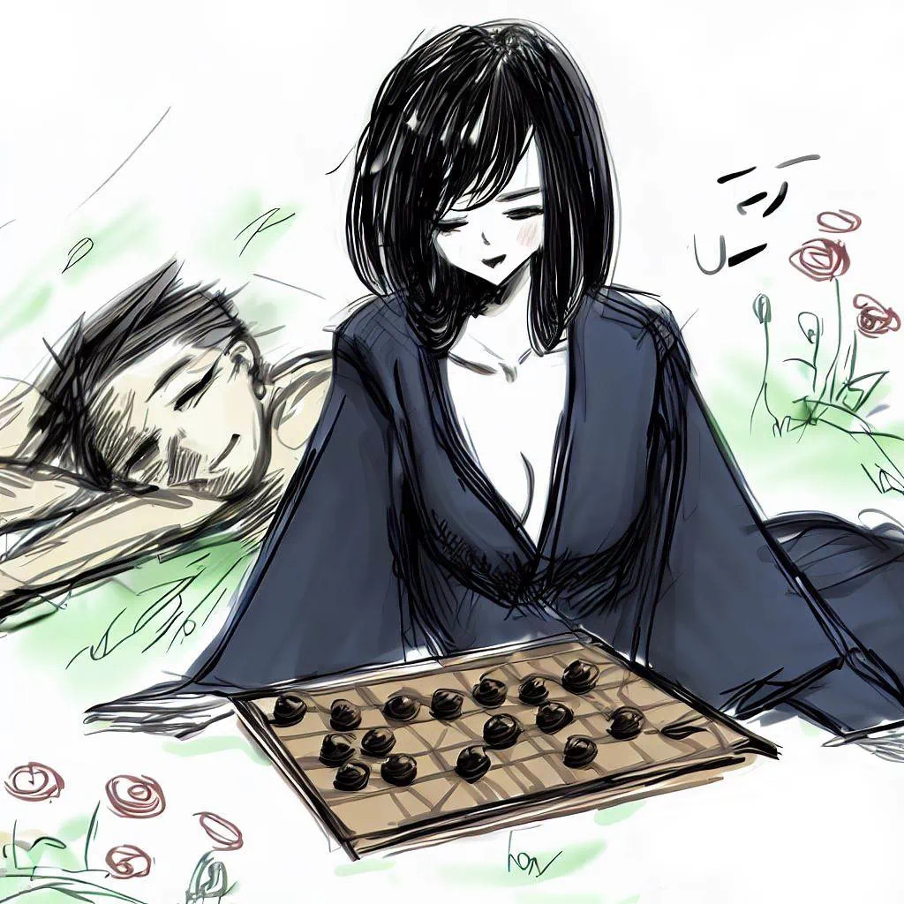

L'Amour sous les cerisiers
Épigraphe
Entre l'abîme de la mort et la lumière de l'amour, nous dansons.
Introduction
Dans la région du Kansai, au Japon, une légende persistante raconte qu'à la lueur de la pleine lune, une figure envoûtante émerge, captivant les voyageurs perdus.
Sublime et énigmatique, Komayō charme les âmes errantes en leur offrant un semblant de félicité. Avec une malice subtile, elle les invite à une partie de ōgi, un jeu complexe dérivé des échecs japonais traditionnels. Envoûtés par sa présence et séduits par l'illusion d'un bonheur à portée de main, les infortunés s'engagent avec enthousiasme dans un labyrinthe de stratégies et de manœuvres.
Cependant, au fil du jeu, une lassitude insidieuse s'installe. Le jugement des joueurs se trouble et ils plongent dans un sommeil profond et inébranlable.
C'est dans cet état de sommeil que Komayō montre son vrai visage. Elle puise leur vitalité, laissant derrière elle une coquille vide, autrefois pleine de vigueur. Leur âme, désormais transformée en yūrei, est condamnée à errer sans fin. Hantées par l'aura irrésistible de Komayō et par l'illusion de finir leur partie de ōgi, ces âmes demeurent piégées, engagées dans une quête sans fin et un rêve brisé.

Le Jardin des Âmes Perdues
Il existe, au-delà des frontières tangibles, un lieu d'une splendeur presque irréelle. C'est le royaume de Komayō, une fusion onirique de réalité et de fantasme. Dans cet endroit, le temps n'est qu'un murmure, promettant une éternité paisible.
Les cerisiers semblent fleurir sans fin, libérant des pétales qui tourbillonnent en une danse éternelle, comme attirés par une force invisible. Les eaux des étangs, claires comme du cristal, miroitent sous un ciel d'azur éternel, jamais assombri. Des oiseaux aux éclats dorés bercent l'atmosphère de leurs chants mélodieux, et chaque chemin dévoile un spectacle encore plus captivant. Pour ceux qui pénètrent dans ce sanctuaire, l'ailleurs devient un vague souvenir.

Komayō y siège comme une déesse. Sa beauté est telle que même les fleurs, en sa présence, semblent retenir leur souffle. Ses yeux, profonds et insondables, renferment des secrets aussi vieux que l'espace lui-même, et chaque sourire qu'elle esquisse pourrait ensorceler le plus endurci des cœurs. Portant un kimono d'un bleu aussi profond que la nuit, orné d'esquisses de fleurs et de créatures mythiques, le moindre froissement du tissu chante sa grâce intemporelle. Et lorsqu'elle parle, ses lèvres carmin bougent avec une lenteur calculée, telle une invitation silencieuse à se perdre dans les profondeurs de son monde.
Bien que splendide, ce royaume recèle un secret redoutable. Les âmes qui s'y sont égarées sont éblouies, non seulement par la magnificence du lieu, mais surtout par le charme irrésistible de Komayō. Capturées par sa beauté envoûtante, elles croient évoluer dans une félicité perpétuelle, inconscientes qu'elles sont désormais enchaînées à sa séduction. Pour elles, le monde de Komayō se transforme en une réalité éternelle, une existence doucement bercée d'illusions.
Ce que Komayō désire le plus chez ces âmes n'est pas la douleur, mais leur admiration inconditionnelle, leur fervente dévotion. C'est de cet amour, de cette adulation sans faille, qu'elle tire sa force, consolidant ainsi son pouvoir sur ce royaume des rêves.
En cette journée, un frémissement parcourt l'air. Komayō, dans une intuition presque surnaturelle, sent l'approche d'une nouvelle âme, éperdue par l'appel d'un amour intemporel et d'une joie sans borne. Se levant avec une grâce qui paraît à la fois fluide et mesurée, elle ajuste délicatement les plis de son kimono. Son regard, profond et magnétique, scrute l'horizon, ses yeux étincelant d'une lueur d'anticipation. Elle est prête à accueillir ce nouvel invité, à l'entraîner doucement dans les spirales envoûtantes de son univers.
Les Rêves Inachevés de Jun
Jun travaillait dans le quartier Hommachi de Ōsaka, un quartier animé et moderne, mais aussi chargé d’histoire. Employé d'une entreprise sans âme, il s'y ennuiait profondément. Sans véritables amis, ses relations se limitaient à des collègues polis mais distants. Il avait des rendez-vous sporadiques avec des femmes, mais aucune ne faisait battre son cœur. Il portait en lui un vide, une solitude qui semblait insurmontable.

Depuis quelque temps, un rêve étrange le tenaillait. Errant au milieu d'un champ doré d'épis de blé, Jun était hypnotisé par le soleil couchant qui teintait tout d'une lueur orangée. Au loin, une silhouette féminine, les cheveux dansant au gré du vent, se détachait. Il était irrémédiablement attiré par elle, chaque fibre de son être ressentant une irrésistible envie de la rejoindre. Alors qu'il courait vers cette apparition, elle jetait des regards par-dessus son épaule, esquissant par moments un sourire envoûtant qui semblait l'inviter à la poursuivre. Mais, invariablement, à mesure qu'il se rapprochait, elle traversait un portail en bois qui se refermait promptement derrière elle. Les doigts de Jun effleuraient presque le bois ancien du portail quand il s'éveillait en nage.
Ce rêve le consumait. Qui était cette femme insaisissable ? Était-elle réelle ou simplement une chimère née de son désir inassouvi ? Le rêve était-il un présage ou simplement le miroir de sa frustration quotidienne ?
Loin du tumulte du quartier, le Parc Utsubo était son havre de paix. Il connaissait chaque recoin de ce lieu, chaque secret qu'il cachait. Les roses étaient ses favorites, avec leurs histoires colorées et parfumées, silencieuses mais éloquentes. Le soleil, se mirant dans l'eau, semait des paillettes d'or à la surface de l'étang. C'était là, dans ce cocon de sérénité, que Jun puisait inspiration et réconfort.
En cette après-midi d'été, sous la chaleur étouffante, il avait choisi de se réfugier près de la fontaine. Le chuchotement apaisant de l'eau se mêlant à la fraîcheur ambiante l'accueillait. Trouvant une place sur un banc, il profita de l'ombre des pins, laissant le vent doux effleurer sa peau.
Tout à ses rêveries, un détail inattendu attira son regard. Sur une pierre sculptée, rappelant vaguement un échiquier, se tenait un jeu de ōgi. Les pièces, finement gravées, avaient une patine ancienne. Curieusement, certaines d'entre elles portaient des motifs rappelant étrangement le kimono de la femme de ses rêves, avec ses fleurs et ses dragons. Elles semblaient presque vivantes, comme si elles invitaient Jun à les toucher.
« Étrange... », murmura-t-il, attiré comme par un aimant. Il étendit une main et, presque sans y penser, toucha l'une des pièces gravées. L'atmosphère changea immédiatement, et il ressentit un lien puissant, comme s'il venait de toucher un fragment d'un monde inconnu.
L'Échiquier du Destin
Jun était incertain sur ce qui l'avait poussé à effleurer la pièce du jeu de ōgi. Était-ce une simple curiosité, un besoin de distraction ou bien un élan mystérieux, comme si la pièce elle-même l'avait appelé ?
Soudain, il entendit une voix suave derrière lui, faisant écho au chant lointain des criquets :
« Êtes-vous perdu ? »
Il se retourna, et vit émerger de l'ombre, drapée dans un kimono bleu nuit, une femme superbe à la chevelure noire, lisse et brillante, tombant en cascade sur ses épaules. Le simple bruissement de son kimono semblait danser à ses oreilles, comme une mélodie lointaine. Elle avait un visage fin et délicat, avec des traits harmonieux et expressifs. Ses lèvres étaient rouges comme le sang, et son sourire était envoûtant. Elle avait une allure de princesse, mais aussi de prédatrice. Elle dégageait une aura de grâce et de mystère, qui attirait et effrayait à la fois. Une fragrance irrésistible émanait d'elle, l'envahissant, le subjuguant.
Jun resta muet, hypnotisé par le regard profond de la femme. « Je... Je ne suis pas sûr », répondit-il, sa voix tremblante trahissant une certaine nervosité.
Chaque geste qu'elle faisait était calculé, avec la grâce d'une étoile filante dans le ciel nocturne. Elle le dévisageait, comme si elle voulait lire en lui, pénétrer son essence. Son sourire s'élargit, chaque mot coulant de ses lèvres comme du miel. « Que cherchez-vous vraiment, Jun ? Est-ce uniquement ce jeu ou peut-être... quelque chose de bien plus profond ? »
Jun, son regard rivé sur le pion qu'il manipulait machinalement, prit une légère inspiration avant de répondre. « J'ignorais que je vous cherchais... jusqu'à ce moment. »
Elle inclina légèrement la tête, ses longs cheveux noirs glissant sur son épaule. Un rire doux mais intrigant s'échappa de ses lèvres, contrastant avec la sévérité de ses yeux qui le fixaient toujours intensément. « Et maintenant que vous m'avez trouvée », commença-t-elle, sa voix devenant légèrement plus basse, chargée d'une promesse non dite, « que comptez-vous faire ? » Son sourire s'élargit, à la fois séduisant et inquiétant, révélant une confiance absolue dans le pouvoir qu'elle détenait sur lui.
Jun prit une grande inspiration. Elle effleura du bout des doigts le dos de la main de Jun, un contact si léger qu'il n'était pas sûr de ne pas l'avoir imaginé. Il regarda la femme droit dans les yeux, une tension palpable s'établissant entre eux. Après un moment qui semblait durer une éternité, il dit :
« J'aimerais vous inviter à jouer avec moi. »
Elle fit une pause, semblant être momentanément prise au dépourvu. Ses yeux, qui jusqu'alors étaient remplis d'assurance, prirent une teinte plus douce, presque vulnérable. « Personne ne m'a jamais invité à jouer ainsi », murmura-t-elle, laissant échapper un léger soupir mélancolique. « C'est audacieux de votre part, Jun. » Son sourire revint, plus timide cette fois, comme si elle avait laissé entrevoir, l'espace d'un instant, une facette cachée d'elle-même. Mais dans la profondeur de son regard, une lueur malicieuse persistait, presque imperceptible, suggérant que tout ceci n'était peut-être qu'une autre facette de son jeu.

L'Envoûtement
L'atmosphère de cette fin d'après-midi était imprégnée de la chaleur accablante de l'été. Le ciel était d'un bleu limpide, sans nuages, et le soleil, toujours vibrant dans le ciel, jetait ses rayons dorés partout. Ces rayons se reflétaient sur la surface de l'eau de la fontaine, créant de minuscules éclats de lumière qui dansaient autour d'eux.
Jun était assis en face d'elle, sur un rocher poli par le temps. Il était captivé non seulement par le jeu de ōgi entre eux, mais surtout par la présence même de la femme. Le moindre de ses mouvements, le moindre regard échangé, renforçait le lien naissant entre eux. À chaque pièce déplacée, à chaque stratégie esquissée, Jun se sentait de plus en plus proche d'elle.
Elle, d'une beauté envoûtante, semblait bien consciente de son pouvoir sur lui. Avec chaque mouvement délicat de ses doigts effleurant les pièces avec une douceur délicate, elle le séduisait davantage. Ses lèvres rouges s'entrouvraient parfois pour laisser échapper des commentaires sur le jeu, mais Jun ne l'écoutait que distraitement. Pour lui, ce n'était pas le jeu qui importait, mais la magie de l'instant.
Les échecs et les victoires de la partie passaient au second plan. Jun se sentait comme s'il dansait avec elle, se laissant guider par la mélodie de ses rires et de ses murmures. Elle jouait non seulement avec les pièces du jeu, mais aussi avec les cordes de son cœur.
À un moment donné, Jun, submergé par les émotions, osa lever les yeux vers elle, cherchant dans son regard une confirmation de ce qu'il ressentait. Elle leva les yeux, ses prunelles profondes capturant les siennes. « Vous jouez bien », murmura-t-elle, mais sa voix avait une qualité mélodieuse, comme si elle chantait une berceuse.
Jun sourit timidement. « C'est grâce à vous », répondit-il. « Vous me guidez. »
Elle se pencha légèrement en avant, ses yeux brillant d'une lueur malicieuse. « Est-ce le jeu que vous jouez, Jun, ou autre chose ? »
Jun, son cœur battant la chamade, répondit d'une voix douce, « Je joue pour le plaisir de ce moment avec vous. »
Le parc tout entier semblait retenir son souffle, attendant la réponse de la femme. Elle sourit doucement, ses yeux reflétant une profondeur et une compréhension que Jun n'avait jamais ressenties auparavant. « Alors jouons, cher Jun. Jouons pour ce moment éphémère. »
L'Interstice entre Rêve et Réalité
Les secondes s'écoulaient, chaque mouvement de la partie semblait accentuer le caractère irréel du moment. « J'ai l'impression d'être dans un rêve éveillé », avoua subitement Jun, les yeux toujours captivés par la fascinante silhouette de la femme en face de lui.
La manière dont elle bougeait, la délicatesse de ses gestes, la courbe douce de ses lèvres à chaque expression, tout en elle était irrésistiblement attirant. Chaque détail semblait conçu pour envoûter. Elle se pencha lentement en avant, chaque mèche de ses cheveux glissant comme une caresse contre sa peau laiteuse. Son visage était si près du sien qu'il pouvait sentir la tiédeur de son souffle. Dans une intonation qui frôlait la tendresse, elle murmura : « Alors qu'adviendra-t-il quand tu te réveilleras ? »
Jun, les yeux emplis d'une émotion presque palpable, chercha à retrouver ses mots. L'éclat mystérieux dans ses yeux le troubla. « Ne seriez-vous pas la femme de mes rêves que je cherche depuis toujours ? » dit-il enfin. Il hésita, hypnotisé par le mouvement subtil de ses lèvres alors qu'elle esquissait un demi-sourire. « Mais qui êtes-vous, réellement ? »
La réponse vint doucement, comme une mélodie qui fait écho à un rêve lointain. « Je m'appelle Komayō », murmura-t-elle, le regard empreint d'une douceur envoûtante.
Elle caressa doucement le plateau du jeu entre eux, les doigts effleurant les pièces avec une tendresse qui semblait presque tangible. « Ce que tu ressens n'est pas un simple rêve », dit-elle d'une voix suave. « C'est un espace que j'ai créé, mon jardin secret. C'est un lieu à la frontière de ton rêve et de la réalité. »
Les paroles de Komayō firent naître en Jun une sensation de vertige, mêlée d'une affection profonde. Il saisit délicatement sa main, cherchant à y trouver une ancre. « Quoi qu'il en soit », murmura-t-il, chaque mot imprégné d'une passion contenue, « je ne veux pas vous perdre. »
Le Pacte Éthéré
Alors que la douce confession de Jun résonnait encore dans l'air, le regard de Komayō s'assombrit. Ses yeux, profonds et abyssaux, étaient tels deux puits d'encre où Jun se sentait irrésistiblement attiré. Elle détourna lentement le regard, ses cils longs et épais projetant de délicates ombres sur ses joues rosées.
« Notre rencontre », commença-t-elle, sa voix vacillant légèrement, trahissant une mélancolie à peine voilée, « aussi belle soit-elle, ne peut malheureusement être qu'éphémère ». En prononçant ces mots, une lueur étrange traversa ses yeux, comme une étoile filante dans le ciel d'une nuit sombre. Les commissures de ses lèvres s'inclinèrent légèrement, dessinant une expression de regret. Chaque mouvement, chaque intonation de sa voix semblaient orchestrés pour plonger Jun dans un état d'émotion profonde.
Jun sentait une lourdeur dans son cœur, comme s'il portait le poids d'un orage imminent. Il fixa Komayō, cherchant une once d'espoir dans son regard énigmatique. « Pourquoi ? » balbutia-t-il, chaque fibre de son être refusant d'accepter cette cruelle réalité.
L'élégance naturelle de Komayō était renforcée par son aisance à contrôler chaque aspect de son expression. Elle posa une main légère sur le plateau de ōgi, les ongles délicats frôlant les pièces. « Il existe des forces », murmura-t-elle, « qui sont bien plus grandes que nos simples sentiments ». Sa main remonta lentement, traçant un chemin évanescent le long de sa clavicule, s'attardant un instant à l'endroit où son pouls battait faiblement.
Jun était suspendu à ses lèvres, aspirant à chaque mot qu'elle prononçait. Il était comme un papillon, attiré irrésistiblement par la lumière, même si cette lumière pouvait le consumer.
Sentant la détresse de Jun, Komayō esquissa un sourire doux-amer, ses dents blanches brillant légèrement. « Il y a peut-être un moyen », dit-elle en laissant sa main errer sur le plateau du jeu, « un moyen de transcender ces barrières ». Elle inclina la tête, permettant à ses cheveux soyeux de glisser sur son épaule, « Si tu gagnes cette partie de ōgi, je trouverai un moyen de te rejoindre dans ton monde. Mais si tu perds... ». Elle s'arrêta, son regard se plongeant dans le sien avec une intensité presque tangible, « tu devras venir avec moi, dans un lieu où le temps et l'espace n'ont plus de sens ».
Jun prit une profonde inspiration, son regard ne quittant pas le sien. « Peu m'importe l'issue », répondit-il avec une détermination évidente, « tout ce que je désire, c'est d'être avec vous ».
Le Crépuscule d'une Âme
Le soleil commençait à descendre. Le silence était ponctué par le doux clapotis de l'eau de la fontaine, et par le léger tintement de chaque pièce d'ōgi lorsqu'elle était déplacée sur la pierre encore chaude. Tout était comme suspendu dans une bulle d'éternité.
Komayō, observant Jun, remarqua ses paupières lourdes. « As-tu sommeil ? » demanda-t-elle, la voix douce comme une caresse.
Jun secoua la tête, essayant de chasser la fatigue qui l'envahissait. « Non, je vais bien », répondit-il, ne voulant pas paraître vulnérable devant elle.
« Tu es très douée », complimenta-t-il soudain, cherchant à rompre la tension qui s'était installée.
Elle esquissa un sourire. « Merci. Tu te débrouilles bien aussi. »
Jun sourit, l'air radieux, et ferma les yeux un instant, se perdant dans la douceur du moment. Lorsqu'il les rouvrit, il vit qu'elle s'était rapprochée de lui. Leur regard se croisa et Komayō se pencha lentement vers lui, déposant un baiser doux et tendre sur ses lèvres.
La surprise de Jun fut palpable, mais il ne résista pas. Il rendit son baiser avec passion, oubliant le jeu, le jardin, tout sauf la femme en face de lui. Ses bras l'entourèrent et il se laissa emporter par le tourbillon d'émotions.
Quand ils rompirent enfin le baiser, une lassitude soudaine envahit Jun. Il sentit ses paupières devenir lourdes et, presque sans s'en rendre compte, sa tête trouva refuge sur l'épaule délicate de Komayō. Elle, avec une douceur feinte, le berça tendrement, caressant ses cheveux. Son regard, aussi profond que l'abîme, était empli d'un sentiment mêlant triomphe et compassion. Son pouvoir sur lui était total, et il glissa doucement dans un sommeil sans fin.
D'une grâce élégante, Komayō déposa Jun sur le banc, le visage du jeune homme rayonnant d'une paix éternelle. Ses doigts fins effleurèrent les pièces du jeu sur la pierre encore chaude, avant de s'arrêter avec satisfaction. Murmurant « Échec et mat », elle esquissa un sourire victorieux, aussi captivant que dangereux. Ses yeux se dirigèrent vers le portail qui se refermait doucement, tel un voile séparant Jun d'un retour possible.
Le jardin, autrefois vibrant et resplendissant, se flétrissait lentement. Les fleurs se courbaient, les eaux perdaient leur clarté, et les arbres, autrefois majestueux, semblaient pleurer leur lente agonie. Tout autour d'eux, ce sanctuaire perdait sa splendeur, écho silencieux de l'âme captive de Jun, prisonnier d'une errance sans fin au sein de ce royaume idyllique.
Alors que le crépuscule enveloppait le jardin de ses teintes orangées, une pleine lune argentée émergeait, baignant le paysage d'une lumière sélénite qui ajoutait à la magie du moment. Son éclat, rivalisant avec les dernières lueurs du jour, se reflétait sur les eaux miroitantes et dans les yeux profonds de Komayō. Telle une ombre éphémère glissant sur l'eau calme sous la bienveillance de cette lune, le regard de Komayō se détacha de Jun pour balayer l'horizon. Avec la même intensité qu'une prière murmurée à la lueur d'une bougie, elle cherchait, tel un faucon céleste, une autre lumière d'âme à attirer dans sa danse éthérée.